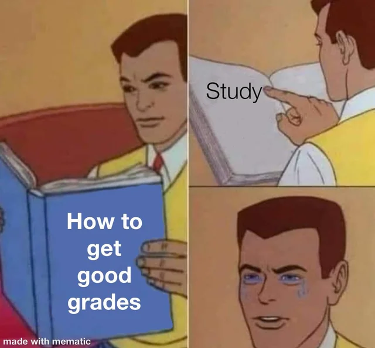

Història de Catalunya i Espanya: Qüestionaris per a segon de batxillerat
Selecciona un tema per començar el qüestionari:
El reformisme dinàstic i les forces d'oposició
La Setmana Tràgica
De Solidaritat Catalana a la Mancomunitat
La dictadura de Primo de Rivera (1923-30)
El sistema polític de la Restauració
Demografia, agricultura i indústria
Societat i moviments socials del segle XIX
El catalanisme cultural i polític
Meme del dia

Un toc d'humor per a l'estudi d'història!